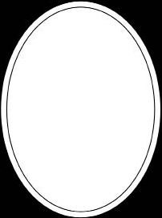

Bildiğinizi düşündüğünüz şeyleri bildiğinizi
nasıl bilirsiniz? "Biliyorum işte!" yanıtını
bir kenara koyduğunuzda geriye kalan epistemolojidir.
DIMITRI: Hah, şimdi iyiyim, Tasso. Mantık olayını kaptım ya, gerisi Akropolis'te piknikten ibaret olur herhalde...
TASSO: Hangi Akropolis'te?
DIMITRI: Hangi mi? Aha, orada duruyor ya işte! Biraz yavaş gitsen diyorum şu içkiyle yani...
TASSO: İyi de, orada dediğin Akropolis mi yoksa senin Akropolis olduğuna inandığın herhangi bir şey mi? Gerçek olduğunu ne biliyorsun? Ayrıca, herhangi bir şeyin gerçek olduğunu nereden biliyorsun?
DIMITRI: Sonraki içkiler benden hocam...
Vahiye Karşı Akıl
Pekâlâ, herhangi bir şeyi, tabi gerçekten bir şey biliyorsak, nasıl biliyoruz?
Bu soru, Ortaçağ boyunca şu soru temelinde kaynayıp durmuştur: İnsan bilgisinin kaynağı olarak ilahi vahiy mi üstündür akıl mı?
Adamın birisi manzara hevesiyle dağlarda dolanırken dengesini kaybedip uçuruma yuvarlanır ve nihayet düşüşünü engelleyecek bir dal yakalayana kadar metrelerce düşer. Ancak ne dal sağlamdır ne de gücü sonsuza dek dayanabilecektir. Umutsuzca haykırır: "İmdat! İmdat! Yardım edecek kimse yok mu?"
Yukarı bakar ama masmavi gökten başka hiçbir şey göremez. Derken birden gök yarılır ve son derece parlak bir ışık üzerine düşer. Ardından gür bir ses duyulur: "Ben varım, oğlum. Bırak dalı, gel kucağıma..."
Adam bir an düşünür ve bir daha haykırır: "Başka kimse yok mu?"
Kısacası, aşağıda uçurum varken bir dala tutunmak terazinin akıl yanının ağır basması demektir.
On yedinci yüzyılda René Descartes aklı ilahi bilgi kaynağının üstüne koymuştur. Bu densizliği de zaman içinde, arabayı atın önüne koymak gibi, Descartes'ı kaynağın önüne koymak olarak anılmıştır.
Descartes herhalde asla "Cogito ergo sum" ("Düşünüyorum öyleyse varım") dememiş olmayı dilerdi. Ne de olsa artık hemen herkes onu sadece bu cümlesiyle hatırlamaktadır. Ha bir de bu cümleyi bir ekmek fırınının içinde otururken söylediği gerçeğiyle. Tüm bunlar yetmezmiş gibi, sarf ettiği "cogito" mütemadiyen yanlış yorumlanmış ve Descartes'in düşünmeyi insan olmanın özsel özelliği saydığı sanılmıştır. Hoş, esasen buna inanıyordu ama bu inancının cogito ergo sum ile uzaktan yakından ilgisi yoktu. Descartes aslında cogito'ya kesinkes emin olabileceği herhangi bir şeyin bulunup bulunmadığını keşfetme amaçlı köktenci bir şüphe deneyi sonucunda ulaşmıştı. Deneyine dış dünyanın varlığından kuşkulanmakla başladı. Bu kadarı kolaydı. Belki de gördüğü düş veya sanrıydı. Ardından kendi varlığından kuşkulanmayı denedi. Fakat ne kadar kuşkulanırsa kuşkulansın, sürekli olarak bir kuşkucunun varolduğu gerçeğiyle yüz yüze geliyordu. Bu kuşkucu kendisinden başka kim olabilirdi ki? Kendi kuşkulanmasından kuşkulanamıyordu! Eh, sadece, "Dubito ergo sum"[5] deseydi, belki de onca yanlış yorumdan kurtulabilirdi...
Amerika'da her ceza mahkemesi hâkimi jüri üyelerinden, savunmanın açıklamalarını neredeyse Descartes'inki kadar yüksek bir standartla sınamalarını ister. Böylece jüriden bir bakıma Descartes'in kesinlik arayışı sürecini yinelemelerini talep eder. Aslında jüri üyelerinin sorunu Descartes'inkiyle aynı değildir; hâkim, sanığın suçluluğunun herhangi bir kuşkuya değil, akla yatkın kuşkuya açık olup olmadığını sorar. Ama bu düşük standart bile jürinin, Descartes'in uyguladığına benzer ve neredeyse aynı ölçüde köktenci bir zihinsel deneyim uygulamasını gerektirir.
Sanık, cinayet suçuyla yargılanmaktadır. Suçluluğunu gösteren ciddi kanıtlar bulunmasına karşın ortada ceset yoktur. Savunma avukatı, kapanış konuşmasında bir numara çekmeye karar verir.
"Baylar, bayanlar" der, "sizlere bir sürprizim var: Bir dakika içinde, öldüğü düşünülen şahıs mahkeme salonuna gelecek."
Sözlerini bitirir bitirmez salonun kapısına bakar. Şaşakalan jüri üyeleri de bakışlarını heyecanla kapıya çevirirler. Bir dakika geçer, hiçbir şey olmaz. Avukat sonunda, "Aslında," der, "öldüğü sanılan şahsın geleceğini ben uydurdum. Ama sonuçta hepiniz beklenti içinde kapıya baktınız. Bu da, bu davada birinin bir cinayete kurban gittiği konusunda akla yatkın ölçüde kuşku taşıdığınızı gösterir. Bu durumda 'suçsuz' kararı vermenizi talep ediyorum."
Jüri karar için çekilir ve birkaç dakika sonra geri döner. Sözcü ayağa kalkar ve kararı okur: "Suçlu."
Avukat ayağa fırlar ve bağırır: "Ama nasıl olur? Kesinlikle kuşkunuz vardı... Hepinizin kapıya baktığını gördüm."
Jüri sözcüsü sakindir. "Evet, hepimiz baktık," der. "Ama müvekkiliniz bakmadı."
Deneycilik
On sekizinci yüzyıldan İrlandalı filozof, Piskopos George Berkeley'in savı şuydu: "Esse est percipi" yani, "Var olmak algılanmaktır". Bu da nesnel dünya denen şeyin tümüyle zihinde olduğu anlamına gelir. Berkeley, dünyaya dair yegâne bilgimizin bize duyularımız yoluyla geldiğini öne sürmüştür. (Filozoflar bu bilgiye "duyu verileri" der.) Bu duyu verilerinin ötesine geçip, der Berkeley, duyularımızı uyaran titreşimleri yollayan madde gibi bir başka şeyin varolduğunu çıkartamazsınız. Ama sayın piskopos çıkartmış, işbu duyu verilerinin bir yerden gelmesi gerektiğini söylemiş ve bu bir yer de Tanrı olmalıdır, demiştir. Berkeley'in fikri, basitçe söylemek gerekirse, Tanrı'nın, hepimizin haftanın yedi günü yirmi dört saat boyunca bağlı kaldığımız kozmik bir web sitesinden duyu verileri yayınladığıdır (Oysa hepimiz Tanrı'nın haftada altı gün, yirmi dört saat çalıştığını zannediyorduk).
Söylentiye göre, Berkeley'in çağdaşı Dr. Samuel Johnson, "Esse est percipi" teorisini duyunca bir taşa tekmeyi savurmuş ve "İşte çürüttüm Piskopos Berkeley'i!" diye bağırmıştır.
Berkeley muhtemelen bu olayı bir şaka olarak yorumlamıştır. Tekme ve ardından gelen sızlayan ayak parmağının tek kanıtladığı Tanrı'nın Dr. Johnson'a koordine duyu verilerini yollamakla uğraştığıdır: önce ayak hareketinin duruşu duyusu, hemen ardından acı duyusu...
Yalnız duyu verilerimizin kaynağı bir başka insan olduğunda işler biraz sarpa sarar:
Bir adam, karısının sağırlaştığı endişesiyle doktora başvurur. Doktor evde basit bir denemeyle durumu çözebileceğini söyler. Adam karısının arkasında önce beş metre, ardından iki metre ve sonunda tam dibine gelerek art arda aynı soruyu soracaktır.
Adam eve gider. Karısı mutfakta, ocağın başındadır. Kapıdan seslenir: "Akşam yemekte ne var?"
Yanıt gelmez.
İlerler, eşinin bir buçuk metre arkasında durur ve sorusunu yineler: "Akşam yemekte ne var?"
Yine yanıt gelmez.
Bu sefer iyice yaklaşır ve eşinin tam arkasına gelince bir daha sorar: "Akşam yemekte ne var?"
Kadın döner ve "Üçüncü defa söylüyorum:Tavuk," der.
Yani bu çiftin ciddi bir veriyorumlama sorunu vardır.
Bilimsel Yöntem
Dış dünyaya dair tüm bilgilerimizin duyularımız yoluyla geldiği görüşü bugün hiç kimseye çok parlak bir buluş gibi gelmeyecektir. Hep öyle değil miydi zaten? Değildi. Geçmiş dönemlerde pek çok filozof zihnimizde doğuştan bir takım "apriori" veya "deneyim öncesi" fikirlerin bulunduğunu düşünmüştü. Kimileri Tanrı fikrimizin kimileri de nedensellik fikrimizin doğuştan geldiğine inanıyordu.
Bugün bile birisi tutup, "Her şeyin bir sebebi vardır" veya "Reenkarnasyona inanıyorum," dediğinde bu, yaşayarak (deneyimle) onaylanamayacak veya reddedilemeyecek bir saptamada bulunuyor anlamına gelir. Ama çoğunluğumuz dış dünyaya dair bir saptamanın en iyi kanıtının duyusal deneyim olduğunu kabul ederiz – bu anlamda hepimiz deneyciyiz. Polonya Kralı değilsek, kuralı kanıtlayan istisna şudur:
Polonya Kralı, bir grup dük ve baronla ceylan avına çıkar.Tam ormana yaklaştıkları sırada ağaçların arasından bir köle fırlar. Adamcağız elini kolunu sallamakta ve "Ben ceylan değilim!" diye bağırmaktadır.
Kral nişan alır ve okunu zavallı kölenin tam kalbine yollar.
Düklerden birisi, "Aman, Kralım," der, "ne yaptınız? Adamcağız ben ceylan değilim diye bağırıyordu."
"Hay Allah," der Kral, "bana 'ben ceylanım' diye bağırıyor gibi geldi."
Pekâlâ, şimdi bu kralı, şu fıkradaki ukala bilim adamıyla karşılaştıralım:
Bir bilim adamı, karısıyla arabalarına atlamış, taşrada geziye çıkmıştır. Kadın birden, "A, bak," der, "koyunların hepsi kırkılmış."
"Hı-hı," der bilim adamı "bize bakan tarafları öyle."
İlk bakışta şöyle düşünebiliriz: Kadın sadece sağduyunun bakış açısını ifade ederken, bilim adamı ise duyuların sunduğu kanıtların ötesine geçmeyen daha temkinli, daha bilimsel bir bakış açısına dayanmaktadır. Bu düşünce yanıltıcıdır. Aslında çoğu bilim insanının daha bilimsel hipotez sayacağı görüşü ifade eden kadındır. Deneycilerin "deneyimi" sadece doğrudan duyusal deneyimle sınırlı değildir. Bilim insanları, olasılıkları hesaplarken ve daha genel çıkarımlarda bulunurken önceki deneyimlerinden yararlanırlar. Fıkrada bilim adamının karısının söylediğinin özü şudur: "Koyunların, en azından bize bakan yanlarının kırkıldığını görüyorum. Çiftçilerin genelde koyunların tek yanlarını kırkmadığını ve burada söz konusu çiftçi öyle yapmışsa bile bu kadar çok koyunun tepenin yamacındaki çayıra, hepsinin birden kırkılmış tarafının yola dönecek şekilde yayılma olasılığının çok düşük olduğunu önceki deneyimlerimden biliyorum. Bu nedenle gönül rahatlığıyla, 'Bu koyunlar tamamen kırkılmıştır,' diyebilirim."
Bu durumda fıkradaki bilim adamının fazla eğitimli dallamanın teki olduğunu varsayabiliriz. Aslında genel olarak, geçmiş deneyimlerinden çıkarım yapamayan kişinin boş kafalı veya daha kaba tabirle tam bir salak olduğunu kabul ederiz.
Komiser, dedektiflik eğitimi gören üç adayı görüşmeye alır. Şüpheliyi tespit yeteneklerini sınamak amacıyla ilk adaya beş saniyeliğine bir fotoğraf gösterir ve fotoğrafı hızla arkasına saklar. "Şüphelin bu," der. "Nasıl tanıyacaksın bakalım?"
Aday yanıtlar: "Kolay. Anında tanırım çünkü tek gözlüydü."
Komiser, "Salak," der, "Sana gösterdiğim fotoğraf yandan çekilmişti."
Ardından komiser fotoğrafı bu defa beş saniyeliğine ikinci adaya gösterip saklar. "Şüphelin bu," der. "Nasıl tanıyacaksın bakalım?"
"Hah!" der ikinci aday, "çok kolay çünkü tek kulağı var."
Komiser öfkelenir. "Oğlum," der, "aklınızı toplayın.Tabii tekgözü ve tek kulağı görünüyor çünkü resim yandan çekilmiş! Bu mudur elinizden gelen?"
Öfkesini kontrol etmeye çabalayan komiser, resmi bu sefer üçüncü adaya gösterir ve aynı soruyu sorar.
Üçüncü aday, "Şüpheli lens kullanıyor," der. Komiser şaşalar çünkü şüphelinin lens takıp takmadığını bilmemektedir. "Hım, ilginç bir yanıt," der. "Bir dakika bekle, şunun dosyasına bakayım."
Çıkar, masasına gider, bilgisayardan şüphelinin dosyasını inceler. Döndüğünde gülümsüyordur. "Vallahi aferin," der üçüncü adaya. "Şüpheli sahiden lens kullanıyormuş. Aferin! Böyle keskin bir gözlemi nasıl yapabildin, söyle bakalım."
"Kolay," der üçüncü aday, "hiç kimse tek kulağı ve tek gözü varken gözlük takamaz."
Batı epistemolojisinde deneyciliğin kazandığı başarılar bizi, herkesin otomatik olarak bu doğrulama yöntemini kullandığı varsayımına götürmüştür:
Üç kadın soyunma odasında, tenis oynamak için üstlerini değiştirirken içeri bir adam dalar. Adam, kafasına geçirilmiş kese kâğıdı haricinde çırılçıplaktır. Kadınlardan birisi adamın penisine bakar ve "Kocam değil bu," der. İkinci kadın, "Evet, değil," der. Üçüncüsüyse, "Kulübümüzün üyesi bile değil," der.
Deneyciliğin ve bilimin onca zaferine rağmen pek çok insan hâlâ bazı sıra dışı olayları doğal nedenlerin sonucu yerine mucize olarak kabul etmeye devam etmektedir. Kuşkucu İngiliz deneycisi David Hume bir şeyin mucize olduğuna inanmadaki tek rasyonel temel, diğer bütün açıklamaların mucizeden daha ihtimal dışı olmasıdır, demiştir. Diyelim ki adamın birisi saksıya dikili ve Aida operasından aryalar söyleyebilen bir palmiyesi olduğunu söylüyor. Hangisi daha ihtimal dışıdır? Saksıdaki palmiyenin doğa kurallarını çiğnemesi mi, adamın deli olduğu veya dalga geçtiği ya da bir takım maddelerin etkisinde kaldığı mı? Hume buna, "Geçiniz," diyecektir. Adamın kandırılmış veya gerçeği çarpıtmış olma ihtimali doğa yasalarının çiğnenme ihtimalinden daha yüksek olduğundan Hume, bir mucizenin gerçekleştiği sonucuna varılacak hiçbir şart öngöremeyecektir. Ayrıca, saksıya dikilmiş palmiyelerin Verdi yerine Puccini'yi tercih ettikleri gerçeğini de unutmamak gerekir.
İlginçtir, aşağıdaki fıkrada Hume'un öğrencisi gibi görünen Bill, mucize olduğu varsayılan bir şeyi sınamaya kalkıyor. Sonunda alternatif açıklamanın daha ihtimal dışı olduğu çıkarımına ulaşmak zorunda kalıyor:
Bill günün birinde arkadaşına dirseğinin feci şekilde ağrıdığını söyler. Bunun üzerine arkadaşı, kent yakınlarındaki bir mağarada yaşayan Hint fakirini ziyaret etmesini önerir. "Tüm yapacağın," der, "mağaranın girişine idrar örneği bırakmak. Fakir onun üstünde meditasyon yapacak, tanısını koyacak ve ne yapman gerektiğini söyleyecek. Hepi topu on dolara patlıyor."
Bill nasılsa fazla bir kaybım olmayacak deyip bir kavanoza idrarını doldurur ve gider, kavanozu on dolarla birlikte mağaranın girişine bırakır. Ertesi gün mağaranın girişine geldiğinde bir not bulur. Notta şunlar yazmaktadır: "Tenisçi dirseğine[6] yakalanmışsınız. Kolunuzu ılık suya sokun. Ağır kaldırmayın. İki hafta içinde düzelecektir."
Aynı akşam Bill, fakirin "mucize"sinin arkadaşının çevirdiği bir numara olduğunu, notu onun yazıp mağaranın ağzına bıraktığını düşünmeye başlar ve arkadaşından intikam almaya karar verir. Bir başka kavanoza musluk suyu, karısı ve oğlunun idrarı ve köpeğinin kılını koyar. Üzerine de kendi bedensel sıvılarından birini ekler ve kavanozu kapatıp on dolarla birlikte mağaranın ağzına bırakır. Ardından arkadaşına telefon eder ve başka sağlık sorunları yaşadığını ve gene fakirin mağarasının önüne kavanozla parayı bıraktığını söyler.
Ertesi gün mağaraya gider ve bir başka not bulur. Notta şunlar yazmaktadır: "Musluk suyunuz kireçli. Köpeğinizde tenya var; vitamin veriniz. Oğlunuz kokain bağımlısı; rehabilitasyona yollayın. Karınız ikizlere hamile; çocuklar sizden değil. Bir avukata başvurunuz. Ayrıca mastürbasyona ara vermezseniz tenisçi dirseğiniz düzelmez."
Ama felsefe de olduğu gibi fıkralarda da genellikle kuşkucu yorumlama daha üstün gelir:
Kasabanın mucizevî arterit tedavileriyle nam salmış hırdavatçısı yaşlı 'Doktor' Bloom'un kapısında upuzun bir kuyruk vardır. Bastonuna yaslanmış, belden yukarısı tümüyle eğik yaşlı bir kadın ayaklarını sürüyerek gelir, kuyruğa girer. Sırası geldiğinde içeri girer ve yarım saat sonra başı yukarıda ve bedeni dimdik çıkar.
Kuyrukta bekleyenlerden birisi, "Bu bir mucize!" der. "Tümüyle öne eğik girdiniz ve şimdi dimdiksiniz. Ne yaptı kuzum doktor?"
"Daha uzun bir baston verdi."
Deneyim alanında görsel veriler olmasa da kör bir insanın da herkes kadar deneyci olabileceği açıktır:
Fısıh gününde bir Yahudi, parkta öğlen yemeğini yemektedir. Kör bir adam gelip yanına oturunca, Yahudi yediği hamursuz ekmekten ikram eder. Kör adam ikram edilen parçayı alır, parmaklarıyla yoklar ve "Kim yazmış bu saçmalığı?" der.
Aşağıdaki fıkradaki adamsa, bir körün başka duyusal doğrulama yolu bulunmadığı gibi saçma bir hataya düşmüştür:
Adamın birisi, köpeğiyle bara girer ve içki ister. Barmen, "Buraya köpekler giremez!" diyince beriki hiç sektirmeden, "O benim kör-köpeğim," diye yanıtlar.
Barmen, "Ah, özür dilerim," der. "Buyurun, ilk içkiniz benden. Adam içkisini alır ve kapının yanındaki bir masaya oturur.
Derken bara bir köpekli adam daha girer. Kapının yanında oturan ilk adam onu durdurur ve "Kör-köpeğidir demezsen köpeğini içeri almıyorlar," der. İkinci adam teşekkür eder, bara yönelir ve içki ister. Barmen, "Buraya köpekler giremez!" der.
Adam hemen, "Ama bu benim kör-köpeğim," diye yanıtlar.
Barmen, "Yok yahu," der, "Chiuahualara[7] kör-köpekliği yaptırdıklarını hiç duymamıştım."
"Ne?" der beriki, "Chihuahua mı vermişler bana?"
Alman İdealizmi
Haydi ya! Bir nesnede sadece duyu verileri olmaz; fazlası lazım... Hani, şöyle ötelerde bir yerlerde, falan...
On sekizinci yüzyıl Alman filozofu Immanuel Kant da öyle düşünmüştü. İngiliz deneycilerini okumuştu ve kendi deyişiyle bu kişiler onu "dogmatik[8] uykusundan" uyandırmıştı. Kant zihinlerimizin bize dünyanın gerçekte nasıl olduğuna dair kesinliği sunabileceğini varsayıyordu. Ama deneyciler, dış dünyaya dair bilgimiz bize duyularımızla geldiği için bilgimizin daima ve kesinlikle kesinlikten uzak olduğunu kanıtlamıştı. Bir çilek sadece belli bir takım donanımlar vasıtasıyla —gözlerimiz ve dilimiz— incelenirse kırmızı ve tatlıdır. Farklı tat alma cisimciklerine sahip kimi insanların çileği hiç tatlı bulmayabileceklerini de biliyoruz. İşte Kant'ın sorusu bu noktada devreye girer: "Kendinde-çilek" nedir ve duyusal donanımımızdan geçtiğinde onu kırmızı ve tatlı —ya da tersi— kılan nedir?"
* * *
Bilimin bize bir şeyin, duyularımız söyleyemese bile, kendinde gerçekten ne olduğunu söyleyebileceğini düşünebiliriz. Ama daha dikkatli bakarsak bilimin aslında bizi kendinde-çileğe daha fazla yaklaştırmadığını görürüz. Çileğin belli kimyasal yapısıyla bir kişinin belli bir nörolojik yapısının birleşerek çileğin tatlı veya ekşi olduğunu ve bu kimyasal yapının çileğin "gerçekten" kendinde ne olduğunu belirlediğini söylemek de aslında işe yaramaz. "Belli bir kimyasal yapı" derken kastettiğimiz sadece "çileği bir takım zımbırtılardan geçirdiğimizde gözlemlediğimiz etki"dir. Tıpkı bir çileği ısırmanın bize kendi tat alma cisimciklerimizden geçtiğinde o çileğin ne olduğunu söylemesi gibi, çileği bu zımbırtılardan geçirmek bize aslında sadece çileğin bu zımbırtılardan geçirildiğinde nasıl göründüğünü gösterir.
* * *
Kant, kendinde şeyler hakkında hiçbir şey bilemeyeceğimiz sonucuna vardı: "Ding an sich, yani kendinde şey, x'e eşittir." Sadece fenomenal dünyayı, yani duyular aracılığıyla tecrübe ettiğimiz görünüşler dünyasını bilebiliriz, görünüşlerin ardındaki aşkın, yani noumenal dünya ise bizim için bilinemez olarak kalır.
Kant bunu söylemek suretiyle felsefede bir paradigma değişiminin yolunu açıyordu. Akıl bize duyularımızın ötesindeki dünya hakkında bir şey söyleyemez. Ne Berkeley'in "veri girme görevlisi olarak" Tanrı'sına ne de dünyanın diğer herhangi bir metafizik açıklamasına saf akılla ulaşılabilir. Bundan sonra felsefede hiçbir şey aynı olmayacaktı...
Sekreter: Doktor, bekleme odasında görünmez bir adam var.
Doktor: Söyle, kendisini göremeyeceğim.
Bu espriyi Kant'ın fenomenal ve noumenal ayrımını açıklamada yeterince yardımcı bulmayabilirsiniz. Nedeni, kimi şeylerin çeviride yitişidir. Fıkrayı Königsberg Üniversitesi'ndeki bir yeraltı barında şu haliyle dinlemiştik:
Sekreter: Herr Doktor, bekleme odasında bir ding an sich var.
Ürolog: Bir ding an sich daha ha! Bugün bir tanesini daha görürsem çıldıracağım! Kimmiş peki?
Sekreter: Nasıl bileyim?
Ürolog:Tarif et.
Sekreter: Yok artık.
İşte gördünüz: özgün sich fıkrası.
Bu fıkrada görünenden çok daha fazlası var. Sekreter, sadece kendinde saklı nedenlerle doktora bekleme odasında bir ding an sich olduğuna ilişkin kanıtını paylaşmamıştır. Söz konusu kanıt her neyse, kesinlikle fenomenal olmalıdır (konuyu takip ediyorsunuz umarız). Nedir peki sekretere durumu kavratan? Duyular âleminden bir şey, belki altıncı his, belki beşi birden ama bir şekilde kesinlikle duyularla ilgili olmalıdır. Buradaki arka plan, sekreterin doktorasını Kant'ın Saf Aklın Eleştirisi üzerine yapmış ve bu yolla kariyerini sekreterlik ve patates kızartıcılığıyla sınırladığını keşfetmiş olmasıdır. Bu yüzden doktorun "Tarif et," isteğini "Hangi duyusal fenomeni tecrübe ediyorsun?" yerine "Adamı kendinde kendisi olarak, görünüşün ardındaki haliyle tarif et," şeklinde yorumlamıştır. Talep karşısında anlaşılır bir şaşalama göstermiş ve işi bırakıp doktorun kuzeni Helmut'la evlenerek üç tatlı çocuk sahibi olmuştur.
Kant ve ardından gelen epistemolojinin büyük kısmı için, ne bilebiliriz ve bu bildiğimizi nasıl bilebiliriz soruları, ne bildiğimiz ve bildiğimizi nasıl bildiğimiz hakkında anlamlı ne söyleyebiliri açısından irdelenebilirdi: Dünya hakkında hangi önermeler dünyaya dair bilgiyi içerir?
Kant bu soruyu yanıtlamaya önermeleri iki kategoriye ayırarak başladı: analitik ve sentetik. Analitik önermeler tanım gereği doğru önermelerdir. "Tüm ornitorenkler memelidir" önermesi, analitik bir önermedir. Bize sözlükte "ornitorenk" maddesine baktığımızda bulacaklarımız dışında gerçek bir ornitorenk hakkında hiçbir yeni bilgi vermez. Öte yandan, "Bazı ornitorenkler şaşıdır" önermesi ise sentetiktir. Bize dünya hakkında yeni bir bilgi sunar çünkü "şaşılık" "ornitorenk" tanımının bir parçası değildir. "Bazı ornitorenkler şaşıdır" önermesi bize ornitorenkler hakkında sözlükte "ornitorenk" maddesine baktığımızda bulamayacağımız bir şey söylemektedir.
Kant bunun ardından a priori ve a posteriori önermeler ayrımına gitti. A priori önermeler, duyusal deneyime dayanmadan, sırf akıl temeliyle yapabileceğimiz önermelerdir. Yukarıdaki "Tüm ornitorenkler memelidir" önermesi apriori bilinen bir önermedir. Doğruluğunu onamak için gidip bir grup ornitorenge bakmamız gerekmez. Sözlüğe bakmamız yeterlidir. Öte yandan, a posteriori yargılar dünyanın duyusal deneyimine dayanırlar. "Bazı ornitorenkler şaşıdır" önermesi sadece belli miktarda ornitorengin gözlenmesiyle —ya kendimiz gözlemleyerek ya da gözlemlediğini söyleyen bir başkasının sözüne güvenerek— doğrulanabilir.

"Bir ding an sich'in portresi"
Buraya kadar analitik a priori önermeleri ("Tüm ornitorenkler memelidir") ve sentetik a posteriori önermeleri ("Bazı ornitorenkler şaşıdır") gördük. Kant'ın sorduğu esas soruya geliyoruz: "Üçüncü bir önerme tipi, yani sentetik a priori önermeler var mıdır?" Böyle bir önerme bize dış dünyaya dair yeni bir bilgi sunan ama salt akılla bilinebilen bir önerme olurdu. Deneyciler, dış dünya için bilgi kaynağımız duyusal deneyimimiz olduğuna göre sentetik a priori bilgi yoktur imasında bulunmuştu. Ama Kant, "Hop! Bir dakika beyler!" dedi. "Peki, 'Her olayın bir nedeni vardır' türünden önermelere ne diyeceksiniz?" Bu önerme sentetiktir: bize dünya hakkında, "neden" ve "olay" tanımları içinde bulunanların ötesinde yeni bir şey söylemektedir. Ama aynı zamanda a prioridir; deneyimle değil, sadece akılla bilinebilir. E, nasıl yani? "Çünkü" der Kant, "anlaşılır bir deneyimimiz varsa, bu önerme doğru varsayılmak zorundadır." Yani, şu anki durumun bir olaylar zinciri nedeniyle gerçekleştiğini varsaymasaydık hiçbir şeyden anlam çıkaramazdık. Hayat, olayların herhangi bir tutarlı düzen izlemediği David Lynch'in Mulholland Çıkmazı filminde yaşamaya benzerdi. Dünya hakkında hiçbir önermede bulunamaz veya yargıya varamazdık çünkü dünyanın dakikasının dakikasına tutacağına güvenemezdik.
Analitik a priori önermelerle sentetik a posteriori önermelerin karıştırılmasına dair yüzlerce espri vardır:
Çok uzun yaşamanın gayet kesin bir yolu var: yüz yıl boyunca her gün bir köfte yemek.
Burada espri, sentetik, a posteriori çözüm isteyen bir duruma analitik, a priori bir "çözüm"ün önerilmesinde yatar. Uzun yaşamaya ilişkin bir sorunun çözümü kesinlikle dünya hakkında bir takım bilgileri gerektirir. "Deneyimin bize uzun yaşamaya yol açar diye gösterdiği şeyler nelerdir?" Bu soruya "Sigarayı bırakın" veya "Yatmadan önce 400 mg Koenzim Q-10 için" türünden bir yanıt bekleriz. Ama buradaki yanıt analitiktir ve konuyla hiçbir ilgisi olmayan köfteler de biraz aklımızı karıştırmaktır. "Uzun yaşamak için yüz yaşına kadar yaşayınız çünkü yüz yıl yaşamak, tanım gereği uzun yaşamaktır. Bu arada köfte de yiyiniz. Zararı olmaz." (Eh, köftelerdeki trans-yağlar belki zarar verir ama yüz yıl yemeniz garantiyse bunun pek zararı olmaz.)
Bir tane daha:
Joe: Ne müthiş şarkıcı, değil mi?
Blow: Hah! Onun sesi bende olsaydı ben de onun kadar iyi olurdum.
Aynı hikâye. "Müthiş şarkıcı"dan kastımız müthiş bir sese sahip olmasıdır ki bu tür övgüyü alacak kişi bu tür bir sese sahip olmalıdır. Bu durumda, Blow'un "Onun sesi bende olsaydı..." yollu önermesi bize Blow'un şarkı söyleme yeteneği hakkında yeni hiçbir şey söylemez. Gerçekte söylediği sadece şudur: "Müthiş bir şarkıcı olsaydım, müthiş bir şarkıcı olurdum." Ve bu, tanım gere ği doğru değilse, hiçbir şey değildir.
Aşağıda sentetik a posteriori ile analitik a priori önermeler karıştırıldığında nelerin olacağına dair daha karmaşık bir fıkra var.
Adamın birisi terziye ısmarladığı takımı denemektedir. Terziye, "Bu kolu biraz daha içeri almalısınız!" der, "fazladan üç santim uzun bu."
"Hayır," der terzi. "Kolunuzu dirsekten bükün... Bakın, işte, yen nasıl çekiliyor."
"E, tamam," der adam, "fakat şimdi de yakaya bir bakın. Dirsekten kolumu büktüğümde yaka ta enseme çıkıyor!"
"E," der terzi, "Başınızı dik tutun ve biraz arkaya atın. Şahane oldu şimdi."
"İyi ama böyle yapınca sol omzum sağdan üç santim aşağıda kalıyor!"
"Hiç dert değil," der terzi, "belden sola doğru biraz eğildiniz mi, tamamdır."
Adamcağız sağ kolu kıvrık ve yana açık, kafası dik ve biraz geride ve belden sola yatık çıkar tezinin atölyesinden. Sallana tökezlene, bir garip yürümektedir.
Aynı anda sokaktan geçen iki kişi adama dikkat eder.
"Vah zavallı adamcağız," der birincisi, "genç yaşta sakat kalmış. İçim paralandı valla."
"Öyle ama terzisinin bir dâhi olduğu kesin," der diğeri, "baksana takım elbiseyi tam oturtmuş!"
Analitiğe karşı sentetik, ha? (Kumaştan bahsetmiyoruz, malum.) Yabancının "Terzisi, giysiyi tam adamın üstüne göre yapmış" düşüncesi, terzi ve görünürdeki dikiş becerisi hakkında gözleme dayalı bilgi ifade eden bir sentetik a posteriori önermedir. Ama "Diktiğim bu takım, tam oturan bir takımdır" terzi için gerçekten bir analitik önermedir ve "Diktiğim bu takım, benim diktiğim bir takımdır" demesiyle aynıdır. Adamın deneyeceği her takım üzerine tam oturacaktır çünkü terzi, adamı giysiye oturtmaktadır.
* * *
Kant'in Saati
Kant saf akla, bilgi sorunlarını çözmede kişisel deneyimin gerekliliğine pek az yer bırakacak denli fazla önem vermiştir. Buna uygun bir tavırla davranıp memleketi Königsberg'den hiç ayrılmamış ve her akşam yemeğinden sonra yürüyüşe çıkmak gibi son derece düzenli alışkanlıklarıyla birlikte yapayalnız bir yaşam sürmüştür. Königsberglilerin saatlerini Profesör Kant'ın aynı sokakta (daha sonra Philosophengang, yani "Filozof Yolu" adıyla anılmaya başlanmıştır) günlük yürüyüşüne göre kurdukları söylenegelmiştir. Daha az bilineniyse (muhtemelen doğru olmadığı için) Königsberg Katedrali'nin zangocunun kilisenin çan kulesinin ayarını filozofun aynı yolda gidip gelişine göre kurduğu ve Kant'ın yürüyüşlerini kilisenin çanına göre programladığıdır. Buyurun size analitikle sentetiğin karışması! Hem Kant hem zangoç, birbirlerinin davranışlarını gözlemlemek suretiyle yeni bilgi edindiklerini sanıyor! Kant saat kulesini gözlemleyerek aslında dünyanın dönüşünün gözlemlenmesiyle saptanan Almanya standart saatini öğrendiğini düşünüyor. Öte yandan zangoç, Kant'ın doğasındaki dakikliğe inancı yüzünden filozofun günlük yürüyüşüne bakarak Almanya standart saatini öğrendiğini düşünüyor. Özünde ikisi de tanımı gereği doğru bir analitik çıkarıma varıyor. Kant'ın "Yürüyüşüme tam 3.30'da çıkıyorum" çıkarımı, "Yürüyüşüme, yürüyüşüme çıktığımda çıkarım" yollu bir analitik önerme ye ulaşıyor çünkü Kant'ın saatin 3.30 olduğunu belirlemesi, kendi yürüyüşüne göre ayarlanmış bir saatin marifetiyle gerçekleşiyor. Zangocun "Saatim doğru ayarlı" çıkarımıysa "Saatim, saatimin gösterdiği saati gösteriyor" önermesine gidiyor çünkü saatinin hassasiyetinde Kant'ın, saatin gösterdiğini temel alan yürüyüşünü kıstas alıyor.
* * *
Matematik Felsefesi
Peki ya Dimitri'nin 2+2=4 olduğu yollu kesin görüşüne ne demeli? Bu tanım gereği doğru olan analitik bir önerme midir? 4 derken kastettiğimiz şey, 2 ile 2'nin toplamının bir parçası mıdır? Yoksa bu önerme sentetik midir? Bize dünya hakkında yeni bir bilgi mi sunuyor? Bu sonuca önce iki şeyi, daha sonra başka iki şeyi sayıp ardından toplamını sayarak mı ulaştık? Bu sonuncusu, Avustralya kırsalında yaşayan Voohoona kabilesinin yaklaşımıdır:
Voohoona yerlilerinden birisi, batılı bir antropologa, 2+2=5 der. Antropolog merakla bu sonuca nasıl ulaştığını sorar. "Sayarak elbette," der yerli. "Önce bir ipe iki düğüm attım. Sonra bir başka ipe iki düğüm daha attım. İki ipi birbirine bağladım, beş düğüm etti."
Matematik felsefesinin büyük bölümü epey teknik ve zordur. Tek bilmeniz gerekense, matematik söz konusu olduğunda dünyada üç tür insan olduğudur: sayabilenler ve sayamayanlar.
Pragmatizm
On dokuzuncu yüzyıl sonlarının Amerikan epistemoloji pragmatisti William James gibi filozoflara göre bir önermenin doğruluğu pratikteki sonuçlarında yatar. James'e göre kendi doğrumuzu, pratikte hangi farkı yaratacağına bakarak seçeriz. Newton'ın yerçekimi yasasına şeylerin "gerçekten oldukları tarza" uygun olduğundan değil, pek çok farklı şart altında iki nesnenin birbirlerine göre davranışlarını önceden bilmek faydalı olduğu için doğrudur deriz: "Hey, bahse girerim elmalar New Jersey'de bile yere düşüyordur!" Bir teori faydalı olmaktan çıktığı gün, yerine bir başkasını koyduğumuz gündür.
Bir kadın, polise kocasının kaybolduğunu bildirmek için telefon açar. Polis, adamın tarifini isteyince kadın, "Bir seksen beş boyunda, yapılı, gür ve kıvırcık saçlıdır," der.
Aynı anda yanında bulunan arkadaşı, "Ne diyorsun sen?" diye lafa girer. "Senin kocan bir altmış beş boyunda, koca göbekli ve kel değil mi?"
"Öylesinin," diye yanıtlar kadın, "geri dönmesini kim ister?"
Bu pek bilinen bir fıkradır; muhtemelen duymuşsunuzdur. Aşağıdakiyse aynı fıkranın fazla bilinmeyen devamıdır:
Telefondaki polis, "Hanımefendi," der, "biz sizden kocanızın gerçek kocanızın tarifine uygun düşen tarifini istiyoruz."
"Uygun ha!" diye yanıtlar kadın. "Gerçek tek başına epistemolojik kıstaslarla belirlenemez çünkü söz konusu kıstasların yeterliliği peşinde koşulan amaçlar ve eldeki değerlerden ayrı tanımlanamaz. Kısacası sonuçta gerçek, tatmin edebilendir ve Tanrı şahidim, kocamın hiçbir tatmin edici yönü yok!"
Fenomenoloji
Felsefe, soyutlamanın doruğuna uçuşun ardından gündelik yaşam deneyimine yumuşak iniş yapmayı bilir. Görüngübilimciler yirminci yüzyılın başlarında "bir şey bilmek gerçekte ne demektir" konusuna yüklendiğinde epistemolojinin başına gelen de budur. Bir dizi felsefi ilkeden ziyade yöntembilime yakın duran fenomenoloji/görüngübilim, insan yaşamını nesnel veri olarak değil, yaşandığı haliyle anlamaya çalışır. Bu, soyutlamaya meyilli bir filozofunkinden ziyade bir roman yazarının yaklaşımıdır.
"Duygudaşlık" veya "empati" anlamına gelen Almanca einfühlung sözcüğü, Edmund Husserl gibi görüngübilimciler tarafından, bir diğer insanın tecrübe ettiğini kavrama girişiminde bulunan bir bilme halini ve dünyayı o insanın hissettiği haliyle bilebilmeyi, başka bir deyişle kişinin kendisini bir başkasının yerine koyabilmesini kastetmede kullanılmıştır.
"Doktor Hanım," der kadıncağız utana sıkıla, "cinsel bir sorunum var... Kocam beni tahrik etmiyor."
Doktor, "Tamam," der, "yarın eşinizi de getirin, bir bakalım."
Ertesi gün kadın, kocasıyla birlikte gelir. Doktor, "Soyununbeyefendi," der. "Şimdi şöyle bir dönün... Hım.Tamam, şimdi şuraya uzanın, lütfen. Hı-hı... Anlıyorum... Tamam, giyinebilirsiniz."
Adam giyinirken doktor hanım, kadını yanına çeker. "Sağlık sorununuz yok sizin," der. "Kocanız beni de tahrik etmedi."
* * *
DIMITRI: İtiraf etmeliyim, Tasso, bu epistemoloji şeyini bilmek iyi geldi.
TASSO: İyi? Nasıl yani? "İyi" derken neyi kastediyorsun?
DIMITRI: Sorunu yanıtlamadan önce ben sana bir şey sorayım: "Baş belası" ne demek, biliyor musun sen?